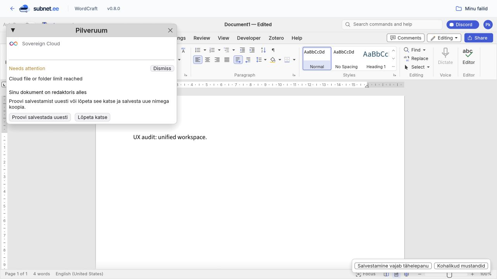
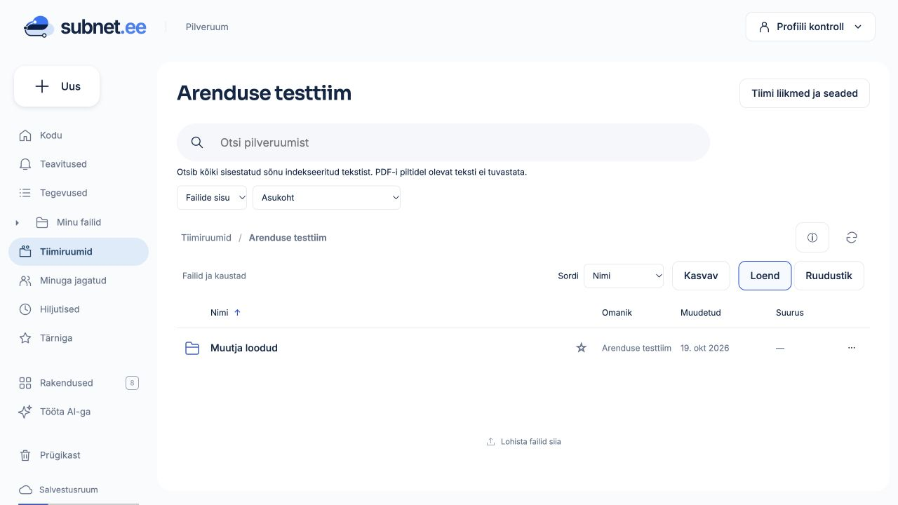
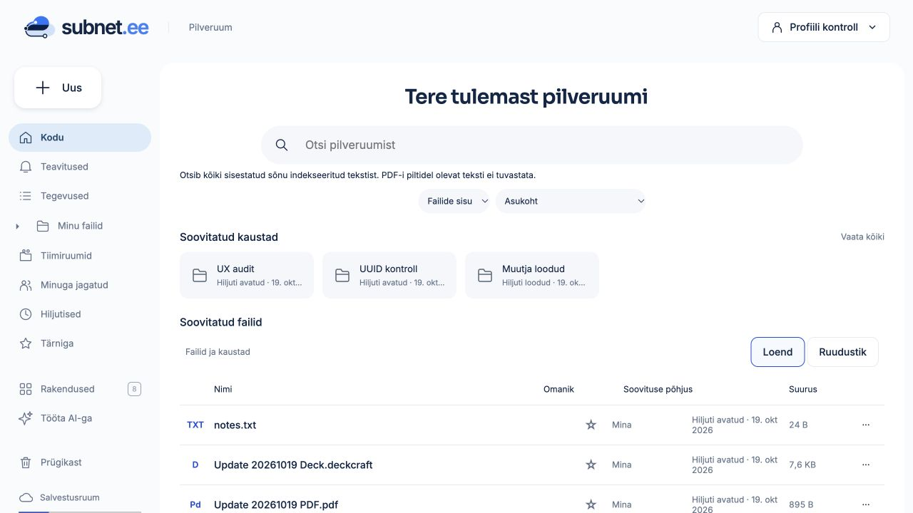

Järgmine suur võit on sujuv teekond kaustast dokumenti ja tagasi: sama konto, selge asukoht, usaldusväärne salvestus ning arusaadav jagamine.
Kohaliku rakenduse audit ja interaktiivsed suunakavandid. Kavandid kasutavad väljamõeldud näidisandmeid; need ei muuda faile ega õigusi. Toote koodi selles etapis ei muudetud.
Vaheta põhivaateid. Failivaates vali rida, ava „Jaga” või vaheta loend ja ruudustik. „Jätka” avab dokumendi kavandi. Kõik toimingud on kohalik illustratsioon.
P0 = töö säilimise usaldus. P1 = igapäevase kogemuse ühtsus. P2 = järgmine mugavuskiht või eraldi katsetatav idee. Need on tööjärjekorra ettepanekud, mitte juba kinnitatud teostusplaan.
| Töövoog | Tulemus | Tõend / piir |
|---|

Auditi proovitekst; uut pilvefaili ei tekkinud. Piiri täpne haru ei ole diagnoositud: backend koondab mitu arvu/sügavuse kontrolli samasse veasse.


Seis 19.10.2026: A ja B ning C otsingu selgus on rakendatud kohalikus versioonis. Kontrollitud on Wordi, tabeli ja esitluse loomine/salvestus/taasavamine, tagasitee kausta ja otsingusse, valiku säilimine, ühine jagamisaken ning mobiilne otsing. Wordi pealkiri ja ühine päis kasutavad sama salvestusolekut; lõplik kohalik avaldatud failide kontroll läbis. Kasutaja ei pea haldama otsingu tehnilist ettevalmistust. Sõnatüved, ühendatud nime- ja sisuotsing ning mõtteruum ei kuulu sellesse paketti.
Valmis siis, kui: loomine → kirjutamine → salvestus → tagasiminek → taasavamine õnnestub ühes ruumis; katkestus ei kaota teksti ega tekita duplikaati.
Valmis siis, kui: kasutaja saab iga faili kohta vastata „kus see on, kas salvestatud ja kes näeb?” ilma eri menüüdesse minemata.
Enne ehitamist: kontrollime, kas ülevaateleht aitab tegelikku infot leida või lisab lihtsalt uue koha, mida hooldada.
Jagatud hosti/adapteri seisundid ja õigused testitakse üks kord. Üks põhjalik WordCrafti loomise–salvestuse–taasavamise voog ning üks teise formaadi adapteri sobivuskontroll, kui ühine leping muutub. Täiendav redaktor ainult siis, kui selle hook või serialiseerimine muutub.
Selles auditietapis ei jooksutatud Cargo ega Crafti testsarju, ei ehitatud WASM-i ega avaldatud midagi mainnetti. Olemasolev 36-punktiline funktsioonide ülevaade jäi eraldi dokumendiks.
Suveräänne kogemus tähendab nähtavat omandit, arusaadavaid õigusi, taastatavaid muudatusi ja väljaviidavaid andmeid. Kasutaja ei pea selleks tundma kanistreid. Täna on andmed teenuse ühises kanistris; oma kanistri omandit või automaatset skaleerumist ei tohi UI-s juba olemasolevana lubada.
Redaktor vastutab sisu ja vormingu eest. Ühine adapter vastutab konto, failiseose ja salvestustulemuse eest. Host näitab asukohta, nime, olekut ning jagamise sissepääsu. Backend otsustab õigused iga päringu ajal. Hosti jaoks vajalikku seisundit jagatakse väikese versioonitava lepingu kaudu, mitte redaktori sisemuse kraapimisega.
Olemasoleval hostil on juba lahkumiskaitse ja adapteril konto ning salvestusolek. Puudus on nende ühine esitlus ja tagasikontekst. Laiendada seda piiri; mitte lisada uut kontoteenust, failiregistrit või üldist pluginaraamistikku. Uued komponendid peavad õigustama konkreetset vastutust.
Notion kasutab lehtede ja alamlehtede mudelit ning võimaldab sisu eksporti. Inspiratsiooniks on see, et eesmärk, tekst ja seotud materjalid saavad olla ühes kohas. Subneti puhul soovitan uurida kausta või tiimiruumi valikulist ülevaatelehte, kus on mõtted ja viited samadele pilvefailidele. Notioni lehemudel · Eksport.
Välise Notioni põimimine ei ühenda iseenesest kontosid, õigusi ega andmete elutsüklit. API-sünkroonimine lisaks kaks tõeallikat ja konfliktid. Need võivad hiljem olla teadlikud integratsioonid, kuid ei ole kõige väiksem tee ühtse Subneti kogemuseni.
Esimene katse: üks versioonitav tekstileht + oluliste failide viited + olemasolevad õigused. Mitte kohe universaalne plokiredaktor, andmebaasid, ülesandehaldus ja automaatika. Viite resolvimine kontrollib sihtfaili õigust; jagatud leht ei tohi avaldada peidetud faili nime ega sisu. Püsiv ID hoiab viite elus nime muutmisel; eksport säilitab loetava sisu ja viited.
Ettepanekud, mitte kinnitatud teostus. Sessioonis loetud ICP oskused toetavad olemasolevat caller-põhist autoriseerimist, ühist sessiooni ning stabiilset andmesalvestust; eraldi autentimisteenuse või uue salvestuskihi vajadust see UX-audit ei tuvastanud. Uue hostilepingu tõend peab olema konto vahetuse, õiguse eemaldamise ja salvestuskonflikti test.